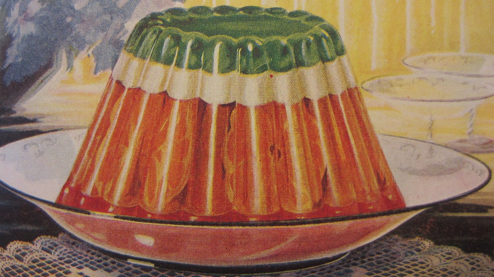

Home
Dense Tea Gelatin

Description
Well here's something different! A chewy, savory gelatin dish that may be entirely my own making. This easy and novel treat will take your mind off our crapsack world, like you're a depressed zoo animal in dire need of enrichment. And really, aren't we all?
I won't lie, this one's mostly about texture, otherwise you'd just drink a cup of tea. But why drink water when you could bite it?
Ingredients
- (4 bags) Earl grey tea (sub: any herbal tea)
- (4 tbsp) Unflavored gelatin
- (3 cups) Filtered water
- (1 cup) Cold milk (sub: oat or nut milk)
- (⅛–¼ cup) Sugar, to taste
Steps
- Pour the cold milk into a mixing bowl.
- Sprinkle the gelatin over the milk. Go slowly!
- Boil the water, add sugar, and steep your tea.
- While the tea steeps, mash the bloomed gelatin with a whisk to break up any clumps.
- Wait until the tea is just cool enough to sip, remove the bags, then pour into the mixing bowl.
- Whisk the mixture until the gelatin is dissolved.
- Cool on the counter-top, then refrigerate for 2–4 hours.
- Enjoy chewing your tea!